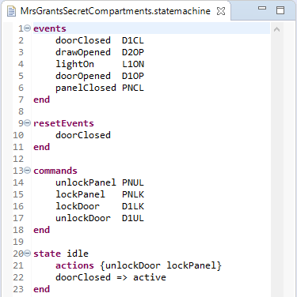
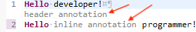

For the following part we will refer to the Xtext Examples shipped with the Xtext framework to describe the different aspects of Xtext’s UI features.
There are various places in the UI in which model elements have to be presented to the user: In the outline view, in hyperlinks, in content proposals, find dialogs etc. Xtext allows to customize each of these appearances by individual implementation of the ILabelProvider interface.
An ILabelProvider has two methods: getText(Object) returns the text in an object’s label, while getImage(Object) returns the icon. In addition, the Eclipse UI framework offers the IStyledLabelProvider, which returns a StyledString (i.e. with custom fonts, colors etc.) in the getStyledText(Object) method.
Almost all label providers in the Xtext framework inherit from the base class AbstractLabelProvider which unifies both approaches. Subclasses can either return a styled string or a string in the doGetText(Object) method. The framework will automatically convert it to a styled text (with default styles) or to a plain text in the respective methods.
Dealing with images can be cumbersome, too, as image handles tend to be scarce system resources. The AbstractLabelProvider helps you managing the images: In your implementation of doGetImage(Object) you can as well return an Image, an ImageDescriptor or a string, representing a path in the icons/ folder of the containing plug-in. This path is actually configurable by Google Guice. Have a look at the PluginImageHelper to learn about the customizing possibilities.
If you have the LabelProviderFragment2 in the list of generator fragments in the MWE2 workflow of your language, it will automatically create stubs and bindings for an {MyLang}EObjectLabelProvider and an {MyLang}DescriptionLabelProvider which you can implement manually.
The EObject label provider refers to actually loaded and thereby available model elements. By default, Xtext binds the DefaultEObjectLabelProvider to all use cases, but you can change the binding individually for the Outline, Content Assist or other places. For that purpose, there is a so called binding annotation for each use case. For example, to use a custom MyContentAssistLabelProvider to display elements in the content assist, you have to override configureContentProposalLabelProvider(..) in your language’s UI module:
@Override
public void configureContentProposalLabelProvider(Binder binder) {
binder.bind(ILabelProvider.class)
.annotatedWith(ContentProposalLabelProvider.class)
.to(MyContentAssistLabelProvider.class);
}
If your grammar uses an imported EPackage, there may be an existing edit-plug-in generated by EMF that also provides label providers for model elements. To use this as a fallback, your label provider should call the constructor with the delegate parameter and use dependency injection for its initialization, e.g.
public class MyLabelProvider {
@Inject
public MyLabelProvider(AdapterFactoryLabelProvider delegate) {
super(delegate);
}
}
The default implementation of the ILabelProvider interface utilizes the polymorphic dispatcher idiom to implement an external visitor as the requirements of the label provider are kind of a best match for this pattern. It boils down to the fact that the only thing you need to do is to implement a method that matches a specific signature. It either provides an image filename or the text to be used to represent your model element. Have a look at the following example to get a more detailed idea about the DefaultEObjectLabelProvider.
public class StatemachineLabelProvider
extends DefaultLabelProvider {
public String text(Event event) {
return event.getName() + " (" + event.getCode() + ")";
}
public String image(Event event) {
return "event.gif";
}
public String image(State state) {
return "state.gif";
}
}
What is especially nice about the default implementation is the actual reason for its class name: It provides very reasonable defaults. To compute the label for a certain model element, it will first look for an EAttribute name and try to use this one. If it cannot find such a feature, it will try to use the first feature that can be used best as a label. At worst it will return the class name of the model element, which is kind of unlikely to happen.
You can also customize error handling by overriding the methods handleTextError() or handleImageError().
Xtext maintains an index of all model elements to allow quick searching and linking without loading the referenced resource (see the chapter on index-based scopes for details). The elements from this index also appear in some UI contexts, e.g. in the Find model elements dialog or in the Find references view. For reasons of scalability, the UI should not automatically load resources, so we need another implementation of a label provider that works with the elements from the index, i.e. IResourceDescription, IEObjectDescription, and IReferenceDescription.
The default implementation of this service is the DefaultDescriptionLabelProvider. It employs the same polymorphic dispatch mechanism as the DefaultEObjectLabelProvider. The default text of an IEObjectDescription is its indexed name. The image is resolved by dispatching to image(EClass) with the EClass of the described object. This is likely the only method you want to override. Instances of IResourceDescription will be represented with their path and the icon registered for your language’s editor.
To have a custom description label provider, make sure it is bound in your UI module:
public void configureResourceUIServiceLabelProvider(Binder binder) {
binder.bind(ILabelProvider.class)
.annotatedWith(ResourceServiceDescriptionLabelProvider.class)
.to(StatemachineDescriptionLabelProvider.class);
}
The Xtext generator, amongst other things, generates the following two content assist related artifacts:
Abstract{MyLang}ProposalProvider generated into the src-gen folder within the ui project, and{MyLang}ProposalProviderFirst we will investigate the generated Abstract{MyLang}ProposalProvider with methods that look like this:
public void complete{TypeName}_{FeatureName}(
EObject model, Assignment assignment,
ContentAssistContext context, ICompletionProposalAcceptor acceptor) {
// subclasses may override
}
public void complete_{RuleName}(
EObject model, RuleCall ruleCall,
ContentAssistContext context, ICompletionProposalAcceptor acceptor) {
// subclasses may override
}
The snippet above indicates that the generated class contains a complete*-method for each assigned feature in the grammar and for each rule. The braces in the snippet are place-holders that should give a clue about the naming scheme used to create the various entry points for implementors. The generated proposal provider falls back to some default behavior for cross-references and keywords. Furthermore it inherits the logic that was introduced in grammars that were mixed into the current language.
Clients who want to customize the behavior may override the methods from the AbstractJavaBasedContentProposalProvider or introduce new methods with a specialized first parameter. The framework inspects the type of the model object and dispatches method calls to the most concrete implementation that can be found.
It is important to know that, for a given offset in a model file, many possible grammar elements exist. The framework dispatches to the method declarations for any valid element. This means that a bunch of complete* methods may be called.
To provide a dummy proposal for the code of an event instance, you may introduce a specialization of the generated method and implement it as follows. This will propose ZonkID for an event with the name Zonk.
@Override
public void completeEvent_Code(
Event event, Assignment assignment,
ContentAssistContext context, ICompletionProposalAcceptor acceptor) {
// call implementation of superclass
super.completeEvent_Code(model, assignment, context, acceptor);
// compute the plain proposal
String proposal = event.getName() + "ID";
// Create and register the completion proposal:
// The proposal may be null as the createCompletionProposal(..)
// methods check for valid prefixes and terminal token conflicts.
// The acceptor handles null-values gracefully.
acceptor.accept(createCompletionProposal(proposal, context));
}
For validations written using the AbstractDeclarativeValidator it is possible to provide corresponding quick fixes in the editor. To be able to implement a quick fix for a given diagnostic (a warning or error) the underlying cause of the diagnostic must be known (i.e. what actual problem does the diagnostic represent), otherwise the fix doesn’t know what needs to be done. As we don’t want to deduce this from the diagnostic’s error message we associate a problem specific code with the diagnostic.
In the following example taken from the DomainmodelValidator the diagnostic’s code is given by the third argument to the warning() method and it is a reference to the static String field INVALID_TYPE_NAME in the IssueCodes interface.
warning("Name should start with a capital",
DomainmodelPackage.TYPE__NAME, IssueCodes.INVALID_TYPE_NAME, type.getName());
Now that the validation has a unique code identifying the problem we can register quick fixes for it. We start by adding the QuickfixProviderFragment2 to our workflow and after regenerating the code we should find an empty class MyDslQuickfixProvider in our DSL’s UI project and new entries in the plugin.xml_gen file.
Continuing with the INVALID_TYPE_NAME problem from the domain model example we add a method with which the problem can be fixed (have a look at the DomainmodelQuickfixProvider for details):
@Fix(IssueCodes.INVALID_TYPE_NAME)
public void fixTypeName(Issue issue, IssueResolutionAcceptor acceptor) {
acceptor.accept(issue,
"Capitalize name", // quick fix label
"Capitalize name of '" + issue.getData()[0] + "'", // description
"upcase.png", // quick fix icon
(IModificationContext context) -> {
IXtextDocument xtextDocument = context.getXtextDocument();
String firstLetter = xtextDocument.get(issue.getOffset(), 1);
xtextDocument.replace(issue.getOffset(), 1, Strings.toFirstUpper(firstLetter));
});
);
}
By using the correct signature (see below) and annotating the method with the @Fix annotation referencing the previously specified issue code from the validator, Xtext knows that this method implements a fix for the problem. This also allows us to annotate multiple methods as fixes for the same problem.
The first three parameters given to the IssueResolutionAcceptor define the UI representation of the quick fix. As the document is not necessarily loaded when the quick fix is offered, we need to provide any additional data from the model that we want to refer to in the UI when creating the issue in the validator above. In this case, we provided the existing type name. The additional data is available as Issue.getData(). As it is persisted in markers, only strings are allowed.
The actual model modification is implemented in the IModification. The IModificationContext provides access to the erroneous document. In this case, we’re using Eclipse’s IDocument API to replace a text region.
If you prefer to implement the quick fix in terms of the semantic model use an ISemanticModification instead. Its apply(EObject, IModificationContext) method will be invoked inside a modify-transaction and the first argument will be the erroneous semantic element. This makes it very easy for the fix method to modify the model as necessary. After the method returns the model as well as the Xtext editor’s content will be updated accordingly. If the method fails (throws an exception) the change will not be committed. The following snippet shows a semantic quick fix for a similar problem.
@Fix(IssueCodes.INVALID_FEATURE_NAME)
public void fixFeatureName(final Issue issue,
IssueResolutionAcceptor acceptor) {
acceptor.accept(issue,
"Uncapitalize name", // label
"Uncapitalize name of '" + issue.getData()[0] + "'", // description
"upcase.png", // icon
(EObject element, IModificationContext context) -> ((Feature) element).setName(Strings.toFirstLower(issue.getData()[0])));
}
The @Fix annotation is repeatable so you can specify it multiple times if a method offers a quickfix for multiple issue codes.
@Fix(IssueCodes.INVALID_TYPE_NAME)
@Fix(IssueCodes.OTHER_ISSUE)
public void fixName(final Issue issue,
IssueResolutionAcceptor acceptor) {
...
}
Alternatively you can wrap it in a @Fixes container.
@Fixes(@Fix(IssueCodes.INVALID_TYPE_NAME),@Fix(IssueCodes.OTHER_ISSUE))
public void fixName(final Issue issue,
IssueResolutionAcceptor acceptor) {
...
}
Xtext also provides a Quickfix API for the definition of multi-quickfixes. Its implementation is similar to the quick fix above, but you need to call acceptor.acceptMulti() instead of acceptor.accept().
@Fix(IssueCodes.INVALID_FEATURE_NAME)
public void fixFeatureName(Issue issue,
IssueResolutionAcceptor acceptor) {
acceptor.acceptMulti(issue,
"Uncapitalize name", // label
"Uncapitalize name", // description
"upcase.png", // icon
(EObject element) -> ((Feature) element).setName(Strings.toFirstLower(issue.getData()[0])));
}
In such cases, you can select all the Invalid Feature Name warnings on the Problems view and use the Quick Fix dialog (either via the context menu or the keyboard shortcut Ctrl + 1) to convert all uppercase feature names into lowercase at once in a single quickfix action.
You can even define quick fixes for linking errors. The issue codes are assigned by the ILinkingDiagnosticMessageProvider. Have a look at the domain model example how to add quick fixes for these errors:
@Fix(IssueCodes.MISSING_TYPE)
public void createReferenceType(Issue issue, IssueResolutionAcceptor acceptor) {
createLinkingIssueResolutions(issue, acceptor);
}
Hence, there is the ISyntaxErrorMessageProvider to assign issue codes to syntactical errors.
Xtext-based editors automatically assist the user by inserting/deleting certain text at typetime, e.g. inserting/removing closing single quotes, double quotes, parenthesis, square brackets or curly braces when the user inserts/removes the opening ones. Moreover, the auto-indentation functionality ensures the indentation-awareness of new lines: after hitting the ENTER key e.g. in a block enclosed by curly braces the cursor is automatically placed on the indented position in the subsequent new line.
This default behaviour can be customized by extending the DefaultAutoEditStrategyProvider class. The Xtext Simple Arithmetics example provides an interactive interpreter as an auto editing strategy by binding the customized AutoEditStrategy class in the ArithmeticsUiModule.
Xtext-based editors automatically support code templates. That means that you get the corresponding preference page where users can add and change template proposals. If you want to ship a couple of default templates, you have to put a file named templates.xml inside the templates directory of the generated UI-plug-in. This file contains templates in a format as described in the Eclipse online help.

By default Xtext registers context types that follow certain patterns. A context type will be created
{languageName}.{RuleName}) and{languageName}.kw_{keyword}).If you don’t like these defaults you’ll have to subclass XtextTemplateContextTypeRegistry and configure it via Guice.
In addition to the standard template proposal extension mechanism, Xtext ships with a predefined set of TemplateVariableResolvers to resolve special variable types in templates. Besides the standard template variables available in GlobalTemplateVariables like ${user}, ${date}, ${time}, ${cursor}, etc., these TemplateVariableResolvers support the automatic resolution of cross references enumeration values. Both resolvers are explained in the following sections.
It is best practice to edit the templates in the preferences page, export them into the templates.xml file and put the file into the templates folder of your UI-plug-in. However, these templates will not be visible by default. To fix it, you have to manually edit the xml-file and insert an id attribute for each template element. Note that the attribute name is case sensitive. As always in Eclipse Plug-In development, if the folder templates did not exist before, you have to add it to the bin.includes in the build.properties file.
Xtext comes with a specific template variable resolver called CrossReferenceTemplateVariableResolver, which can be used to pre-populate placeholders for cross-references within a template. The respective template variable is called CrossReference and its syntax is as follows:
${<displayText>:CrossReference([<MyPackageName>.]<MyType>.<myRef>)}
Where “displayText” is the initial value that is shown in the editor. It is also the identifier for a place holder so that multiple place holders with the same name will be updated at once by the user using linked editing.
This small example (taken from the Xtext Statemachine example) yields the text event => state and allows selecting any events and states using a drop down:
<template
name="Transition"
description="Template for a Transition"
id="org.eclipse.xtext.example.fowlerdsl.Statemachine.Transition"
context="org.eclipse.xtext.example.fowlerdsl.Statemachine.Transition"
enabled="true"
>${event:CrossReference('Transition.event')} => ${state:CrossReference('Transition.state')}</template>
</template>

The EnumTemplateVariableResolver resolves a template variable to EEnumLiterals which are assignment-compatible to the enumeration type declared as the first parameter of the Enum template variable.
The syntax is as follows:
${<displayText>:Enum([<MyPackage>.]<EnumType>)}
For example the following template (taken from the Xtext Domainmodel example):
<template
name="Entity"
description="template for an Entity"
id="entity"
context="org.eclipse.xtext.example.Domainmodel.Entity"
enabled="true">
${public:Enum('Visibility')} entity ${Name} {
${cursor}
}
</template>
yields the text public entity Name {} where the text public is the default value of the Visibility. The editor provides a drop down that is populated with the other literal values as defined in the EEnum.
Xtext provides an outline view to help you navigate your models. By default, it provides a hierarchical view on your model and allows you to sort tree elements alphabetically. Selecting an element in the outline will highlight the corresponding element in the text editor. Users can choose to synchronize the outline with the editor selection by clicking the Link with Editor button.

In its default implementation, the outline view shows the containment hierarchy of your model. This should be sufficient in most cases. If you want to adjust the structure of the outline, i.e. by omitting a certain kind of node or by introducing additional nodes, you can customize the outline by implementing your own IOutlineTreeProvider.
If your workflow defines the OutlineTreeProviderFragment2, Xtext generates a stub for your own IOutlineTreeProvider that allows you to customize every aspect of the outline by inheriting the powerful customization methods of DefaultOutlineTreeProvider. The following sections show how to fill this stub with life.
Each node in the outline tree is an instance of IOutlineNode. The outline tree is always rooted in a DocumentRootNode. This node is automatically created for you. Its children are the root nodes in the displayed view.
An EObjectNode represents a model element. By default, Xtext creates an EObjectNode for each model element in the node of its container. Nodes are created by calling the method createNode(parentNode, modelElement) which delegates to createEObjectNode(..) if not specified differently.
To change the children of specific nodes, you have to implement the method
_createChildren(parentNode,
parentModelElement)
with the appropriate types. The following snippet shows you how to skip the root model element of type Domainmodel in the outline of our domain model example:
protected void _createChildren(DocumentRootNode parentNode,
Domainmodel domainModel) {
for (AbstractElement element : domainModel.getElements()) {
createNode(parentNode, element);
}
}
You can choose not to create any node in the _createChildren() method. Because the outline nodes are calculated on demand, the UI will show you an expandable node that doesn’t reveal any children even if it is expanded. This might be confuse your users a bit. To overcome this shortcoming, you have to implement the method _isLeaf(modelElement) with the appropriate argument type, e.g.
// feature nodes are leafs and not expandable
protected boolean _isLeaf(Feature feature) {
return true;
}
Xtext provides a third type of node: EStructuralFeatureNode. It is used to represent a feature of a model element rather than the element itself. The following simplified snippet from Xtend2 illustrates how to use it:
protected void _createChildren(DocumentRootNode parentNode,
XtendFile xtendFile) {
// show a node for the attribute XtendFile.package
createEStructuralFeatureNode(parentNode,
xtendFile,
Xtend2Package.Literals.XTEND_FILE__PACKAGE,
getImageForPackage(),
xtendFile.getPackage(),
true);
// show a container node for the list reference XtendFile.imports
// the imports will be shown as individual child nodes automatically
createEStructuralFeatureNode(parentNode,
xtendFile,
Xtend2Package.Literals.XTEND_FILE__IMPORTS,
getImageForImportContainer(),
"import declarations",
false);
createEObjectNode(parentNode, xtendFile.getXtendClass());
}
Of course you can add further custom types of nodes. For consistency, make sure to inherit from AbstractOutlineNode. To instantiate these, you have to implement _createNode(parentNode, semanticElement) with the appropriate parameter types.
You can also customize the icons and texts for an outline node. By default, Xtext uses the label provider of your language. If you want the labels to be specific to the outline, you can override the methods _text(modelElement) and _image(modelElement) in your DefaultOutlineTreeProvider.
Note that the method _text(modelElement) can return a String or a StyledString. The StylerFactory can be used to create StyledStrings, like in the following example:
@Inject
private StylerFactory stylerFactory;
public Object _text(Entity entity) {
if(entity.isAbstract()) {
return new StyledString(entity.getName(),
stylerFactory
.createXtextStyleAdapterStyler(getTypeTextStyle())));
else
return entity.getName();
}
protected TextStyle getTypeTextStyle() {
TextStyle textStyle = new TextStyle();
textStyle.setColor(new RGB(149, 125, 71));
textStyle.setStyle(SWT.ITALIC);
return textStyle;
}
To access images we recommend to use the PluginImageHelper.
Often, you want to allow users to filter the contents of the outline to make it easier to concentrate on the relevant aspects of the model. To add filtering capabilities to your outline, you need to add a filter action to your outline. Filter actions must extend AbstractFilterOutlineContribution to ensure that the action toggle state is handled correctly. Here is an example from the Xtext Domainmodel example:
public class FilterOperationsContribution
extends AbstractFilterOutlineContribution {
public static final String PREFERENCE_KEY =
"ui.outline.filterEntities";
@Inject
private PluginImageHelper imageHelper;
@Override
protected boolean apply(IOutlineNode node) {
return !(node instanceof EObjectNode)
|| !((EObjectNode) node).getEClass()
.equals(DomainmodelPackage.Literals.OPERATION);
}
@Override
public String getPreferenceKey() {
return PREFERENCE_KEY;
}
@Override
protected void configureAction(Action action) {
action.setText("Hide operations");
action.setDescription("Hide operations");
action.setToolTipText("Hide operations");
action.setImageDescriptor(imageHelper.getImageDescriptor("Operation.gif"));
}
}
The contribution must be bound in the DomainmodelUiModule like this
public void configureFilterOperationsContribution(Binder binder) {
binder
.bind(IOutlineContribution.class).annotatedWith(
Names.named("FilterOperationsContribution"))
.to(FilterOperationsContribution.class);
}
Xtext already adds a sorting action to your outline. By default, nodes are sorted lexically by their text. You can change this behavior by binding your own IComparator.
A very common use case is to group the children by categories first, e.g. show the imports before the types in a package declaration, and sort the categories separately. That is why the DefaultComparator has a method getCategory(IOutlineNode) that allows to specify such categories. The example shows how to use such categories:
public class MydslOutlineNodeComparator extends DefaultComparator {
@Override
public int getCategory(IOutlineNode node) {
if (node instanceof EObjectNode)
switch((EObjectNode) node).getEClass().getClassifierID())) {
case MydslPackage.TYPE0:
return -10;
case MydslPackage.TYPE1:
return -20;
}
return Integer.MIN_VALUE;
}
}
As always, you have to declare a binding for your custom implementation in your MyDslUiModule:
@Override
public Class<? extends IComparator>
bindOutlineFilterAndSorter$IComparator() {
return MydslOutlineNodeComparator.class;
}
Xtext also provides a quick outline: If you press CTRL-O in an Xtext editor, the outline of the model is shown in a popup window. The quick outline also supports drill-down search with wildcards. To enable the quick outline, you have to put the QuickOutlineFragment2 into your workflow.
Xtext calculates the editor folding regions based on the grammar out-of-the-box. Although it comes with good defaults, sometimes they do not satisfy the needs and have to be customized.
Considering e.g the Xtext Statemachine example, the framework provides folding capabilities for the state regions:

In order to make events, resetEvents and commands foldable too, a custom implementation of the DefaultFoldingRegionProvider is necessary:
public class StatemachineFoldingRegionProvider extends DefaultFoldingRegionProvider {
@Override
protected void computeObjectFolding(
EObject o,
IFoldingRegionAcceptor<ITextRegion> foldingRegionAcceptor) {
if (o instanceof Statemachine) {
XtextResource res = (XtextResource) o.eResource();
computeEventsFolding(res, foldingRegionAcceptor);
computeResetEventsFolding(res, foldingRegionAcceptor);
computeCommandsFolding(res, foldingRegionAcceptor);
} else {
super.computeObjectFolding(o, foldingRegionAcceptor);
}
}
private void computeEventsFolding(
XtextResource res,
IFoldingRegionAcceptor<ITextRegion> foldingRegionAcceptor) {
...
}
private void computeResetEventsFolding(
XtextResource res,
IFoldingRegionAcceptor<ITextRegion> foldingRegionAcceptor) {
...
}
private void computeCommandsFolding(
XtextResource res,
IFoldingRegionAcceptor<ITextRegion> foldingRegionAcceptor) {
...
}
...
}
Additionally, the StatemachineFoldingRegionProvider class has to be bound in the StatemachineUiModule:
public class StatemachineUiModule extends AbstractStatemachineUiModule {
...
public Class<? extends IFoldingRegionProvider> bindIFoldingRegionProvider() {
return StatemachineFoldingRegionProvider.class;
}
}
As a result, not only the state, but also the events, resetEvents and commands regions become foldable:

The Xtext editor provides hyperlinking support for any tokens corresponding to cross-references in your grammar definition. You can either CTRL-click on any of these tokens or hit F3 while the cursor position is at the token in question and this will take you to the referenced model element. As you’d expect this works for references to elements in the same resource as well as for references to elements in other resources. In the latter case the referenced resource will first be opened using the corresponding editor.
When navigating a hyperlink, Xtext will also select the text region corresponding to the referenced model element. Determining this text region is the responsibility of the ILocationInFileProvider. The default implementation implements a best effort strategy which can be summarized as:
The location service offers different methods to obtain the region of interest for special use cases. You can either obtain the complete region for an object or only the identifying string which is usually the name of the instance (see getSignificantTextRegion(EObject)). You can also query for the text region of a specific EStructuralFeature by means of getFullTextRegion(EObject, EStructuralFeature, int).
As the default strategy is a best effort it may not always result in the selection you want. If that’s the case you can override the ILocationInFileProvider binding in the UI module as in the following example:
public class MyDslUiModule extends AbstractMyDslUiModule {
@Override
public Class<? extends ILocationInFileProvider>
bindILocationInFileProvider() {
return MyDslLocationInFileProvider.class;
}
}
Often the default strategy only needs some guidance (e.g. selecting the text corresponding to another feature than name). In that case you can simply subclass the DefaultLocationInFileProvider and override the methods getIdentifierFeature() or useKeyword() to guide the first and last steps of the strategy as described above (see XtextLocationInFileProvider for an example).
The hyperlinks are provided by the HyperlinkHelper which will create links for cross-referenced objects by default. Clients may want to override createHyperlinksByOffset(XtextResource, int, IHyperlinkAcceptor) to provide additional links or supersede the default implementation.
Similar to hyperlinking, Xtext-based editors provide hovering support on certain tokens: e.g. hovering over a cross-reference token, the Xtext framework shows the documentation of the element the cross-reference is referring to. Considering the Xtext Simple Arithmetics example, when hovering over a function call, a popup window displays the documentation of the called function:

This functionality is implemented in the DefaultEObjectHoverProvider that delegates to the MultiLineCommentDocumentationProvider class via the IEObjectDocumentationProvider interface by default. Customization can happen e.g. by extending the DefaultEObjectHoverProvider class, overriding the getHoverInfoAsHtml(EObject o) method and binding the custom implementation in the corresponding UI module:
public class MyDslHoverProvider extends DefaultEObjectHoverProvider {
@Override
protected String getHoverInfoAsHtml(EObject o) {
...
}
}
public class MyDslUiModule extends AbstractMyDslUiModule {
public Class<? extends IEObjectHoverProvider> bindIEObjectHoverProvider() {
return MyDslHoverProvider.class;
}
}
Xtext-based editors are able to highlight all occurrences of a certain element in the opened DSL file. Once the user selects an element while the Toggle Mark Occurrences button is enabled, all occurrences are highlighted with corresponding markers on the right side of the editor.

Customization can happen by either extending the DefaultOccurrenceComputer class or even providing a complete implementation of the IOccurrenceComputer interface.
public class MyDslOccurrenceComputer extends DefaultOccurrenceComputer {
...
}
public class MyDslUiModule extends AbstractMyDslUiModule {
public Class<? extends IOccurrenceComputer> bindIOccurrenceComputer() {
return MyDslOccurrenceComputer.class;
}
}
Xtext-based editors are able to locate all references in the entire workspace where a certain element is referred to. Invoking the Find References context menu or using the keyboard shortcut Ctlr+Shift+G (Cmd+Shift+G on Mac) on the selected element lists all the references in the Search view.

The org.eclipse.xtext.findReferences.IReferenceFinder and the org.eclipse.xtext.ui.editor.findrefs.IReferenceFinder interfaces are responsible for this functionality. These interfaces are implemented by the ReferenceFinder and the DelegatingReferenceFinder classes. As almost everything in the Xtext framework, these components can also be customized if the default implementations do not satisfy your needs.
Besides the already mentioned advanced features like content assist and code formatting the powerful editor for your DSL is capable to mark up your model-code to improve the overall readability. It is possible to use different colors and fonts according to the meaning of the different parts of your input file. One may want to use some unintrusive colors for large blocks of comments while identifiers, keywords and strings should be colored differently to make it easier to distinguish between them. This kind of text decorating markup does not influence the semantics of the various sections but helps to understand the meaning and to find errors in the source code.

The highlighting is done in two stages. This allows for sophisticated algorithms that are executed asynchronously to provide advanced coloring while simple pattern matching may be used to highlight parts of the text instantaneously. The latter is called lexical highlighting while the first is based on the meaning of your different model elements and therefore called semantic highlighting.
When you introduce new highlighting styles, the preference page for your DSL is automatically configured and allows the customization of any registered highlighting setting. They are automatically persisted and reloaded on startup.

The lexical highlighting can be customized by providing implementations of the interface IHighlightingConfiguration and the abstract class AbstractTokenScanner. The latter fulfills the interface ITokenScanner from the underlying JFace framework, which may be implemented by clients directly.
The IHighlightingConfiguration is used to register any default style without a specific binding to a pattern in the model file. It is used to populate the preferences page and to initialize the ITextAttributeProvider, which in turn is the component that is used to obtain the actual settings for a style’s id. An implementation will usually be very similar to the DefaultHighlightingConfiguration and read like this:
public class DefaultHighlightingConfiguration
implements IHighlightingConfiguration {
public static final String KEYWORD_ID = "keyword";
public static final String COMMENT_ID = "comment";
public void configure(IHighlightingConfigurationAcceptor acceptor) {
acceptor.acceptDefaultHighlighting(
KEYWORD_ID, "Keyword", keywordTextStyle());
acceptor.acceptDefaultHighlighting(COMMENT_ID, "Comment", commentTextStyle();
}
public TextStyle keywordTextStyle() {
TextStyle textStyle = new TextStyle();
textStyle.setColor(new RGB(127, 0, 85));
textStyle.setStyle(SWT.BOLD);
return textStyle;
}
}
Implementations of the ITokenScanner are responsible for splitting the content of a document into various parts, the so called tokens, and return the highlighting information for each identified range. It is critical that this is done very fast because this component is used on each keystroke. Xtext ships with a default implementation that is based on the lexer that is generated by ANTLR which is very lightweight and fast. This default implementation can be customized by clients easily. They simply have to bind another implementation of the AbstractAntlrTokenToAttributeIdMapper. To get an idea about it, have a look at the DefaultAntlrTokenToAttributeIdMapper.
The semantic highlighting stage is executed asynchronously in the background and can be used to calculate highlighting states based on the meaning of the different model elements. Users of the editor will notice a very short delay after they have edited the text until the styles are actually applied to the document. This keeps the editor responsive while providing aid when reading and writing your model.
As for the lexical highlighting the interface to register the available styles is the IHighlightingConfiguration. The ISemanticHighlightingCalculator is the primary hook to implement the logic that will compute the to-be-highlighted ranges based on the model elements.
The framework will pass the current XtextResource and an IHighlightedPositionAcceptor to the calculator. It is ensured that the resource will not be altered externally until the called method provideHighlightingFor() returns. However, the resource may be null in case of errors in the model. The implementor’s task is to navigate the semantic model and compute various ranges based on the attached node information and associate styles with them. This may read similar to the following snippet:
public void provideHighlightingFor(XtextResource resource,
IHighlightedPositionAcceptor acceptor) {
if (resource == null || resource.getParseResult() == null)
return;
INode root = resource.getParseResult().getRootNode();
for (INode node : root.getAsTreeIterable()) {
if (node.getGrammarElement() instanceof CrossReference) {
acceptor.addPosition(node.getOffset(), node.getLength(),
MyHighlightingConfiguration.CROSS_REF);
}
}
}
This example refers to an implementation of the IHighlightingConfiguration that registers an own style for each cross-reference. It is pretty much the same implementation as for the previously mentioned sample of a lexical IHighlightingConfiguration.
public class HighlightingConfiguration
implements IHighlightingConfiguration {
// lexical stuff goes here
// ..
public final static String CROSS_REF = "CrossReference";
public void configure(IHighlightingConfigurationAcceptor acceptor) {
// lexical stuff goes here
// ..
acceptor.acceptDefaultHighlighting(CROSS_REF,
"Cross-References", crossReferenceTextStyle());
}
public TextStyle crossReferenceTextStyle() {
TextStyle textStyle = new TextStyle();
textStyle.setStyle(SWT.ITALIC);
return textStyle;
}
}
The implementor of an ISemanticHighlightingCalculator should be aware of performance to ensure a good user experience. It is probably not a good idea to traverse everything of your model when you will only register a few highlighted ranges that can be found easier with some typed method calls. It is strongly advised to use purposeful ways to navigate your model. The parts of Xtext’s core that are responsible for the semantic highlighting are pretty optimized in this regard as well. The framework will only update the ranges that actually have been altered, for example. This speeds up the redraw process. It will even move, shrink or enlarge previously announced regions based on a best guess before the next semantic highlighting pass has been triggered after the user has changed the document.
Xtext provides rename refactoring of the elements in your language. That includes
To enable refactoring support make sure the RefactorElementNameFragment2 is enabled in the fragment section of the MWE workflow of your language, e.g.
// rename refactoring
fragment = refactoring.RefactorElementNameFragment2 {}
The fragment has an additional flag useJdtRefactoring which can be used to delegate to JDT’s refactoring infrastructure for languages using Xbase and an inferred JVM model (i.e. the Xtext domain model example or Xtend).
If you have stuck to the defaults with regard to naming, cross-referencing, and indexing, the rename refactoring should not need any customization. Give it a try.
The most likely component you want to customize is the IRenameStrategy. This component defines how the declaration of the target element is performed. It has two major responsibilities:
applyDeclarationChange and revertDeclarationChange). The default is to look for an EAttribute name on the target object and set its value using EMFs reflective API.As the IRenameStrategy is a stateful object, you have to bind a custom Provider to create it.
The second component you might want to customize is the IDependentElementsCalculator. Dependent elements are those elements whose name change when the target element is renamed. For example, when you rename a Java class the qualified names of its inner classes change, too, thus references to these have to be updated as well. This calculation is performed by the IDependentElementsCalculator. By default, all elements contained in the target element are added. This matches Xtext’s default strategy of qualified name computation.
One refactoring can trigger another: When renaming a rule in an Xtext grammar, the returned EClass should be renamed, too. For these cases, you can register a RenameParticipant by the common means of LTK. If the target of the participant is Xtext based, you can use a AbstractProcessorBasedRenameParticipant.
The MWE2 workflow can generate a wizard that clients of your language can use to create model projects. This will be generated in the .ui project. If the language was generated before the plugin.xml will have to be manually merged with the plugin.xml_gen.
This must be explicitly specified in the MWE2 file in the language section as follows
projectWizard = {
generate = true
}
By default, the generated wizard will create a Plug-in project. If you want a General project you need to set the following property to false: pluginProject=false, for example
projectWizard = {
generate = true
pluginProject = false
}
In the src folder of the ui project a MyDslProjectTemplateProvider Xtend file will be generated, where you can specify the templates the user can select from to generate new projects.
The templates define two things. On the one hand they define how the template is presented to the user. A name, a description and the layout of the widgets the user gets presented to select values for the parameters of the template. On the other hand the content of the projects that the template generates is defined. The wizard is able to generate any number and kind of projects with any number and kind of files as content.
The templates are contributed to the wizard by the extension point org.eclipse.xtext.ui.projectTemplate. An implementor of IProjectTemplateProvider is registered for the language it provides templates to. The method of this interface returns instances of AbstractProjectTemplate. Each of these instances defines one template.
To create a subclass of AbstractProjectTemplate it is advisable to annotate a class with the active annotation ProjectTemplate. With this annotation the name and description can be defined and will be made available to the user interface. Also the extension of AbstractProjectTemplate will be done for you.
In a project template the method generateProjects(IProjectGenerator) needs to be overridden. The parameter instance offers a single generate method that takes an instance of ProjectFactory. Using this class, or available subclasses, all kind of projects can be generated by the template. The following illustrates a simple example to generate a plugin project with a template:
generator.generate(new PluginProjectFactory => [
projectName = projectInfo.projectName
location = projectInfo.locationPath
projectNatures += #[JavaCore.NATURE_ID, "org.eclipse.pde.PluginNature", XtextProjectHelper.NATURE_ID]
builderIds += JavaCore.BUILDER_ID
folders += "src"
addFile('''src/Model.mydsl''', '''
Hello World!
''')
])
The AbstractProjectTemplate offers methods to create check boxes, text fields and combo boxes. These will be made available to the user in the wizard to configure the selected template. The values inserted by the user can then be used to configure the templates. In the following example a check box is used to control if a file is generated or not.
@ProjectTemplate(label="Test", icon="project_template.png", description="<p><b>Test</b></p><p>This is a test project.</p>")
final class TestProject {
val generateHello = check("Generate Hello", true)
override generateProjects(IProjectGenerator generator) {
if (generateHello.value) {
generator.generate(new PluginProjectFactory => [
projectName = projectInfo.projectName
location = projectInfo.locationPath
projectNatures += #[JavaCore.NATURE_ID, "org.eclipse.pde.PluginNature", XtextProjectHelper.NATURE_ID]
builderIds += JavaCore.BUILDER_ID
folders += "src"
addFile('''src/Model.mydsl''', '''
Hello World!
''')
])
}
}
}
For more elaborate templates it is also possible to group parameters together, enable/disable parameters, have parameter values be changed in response of the change of a different parameter and add validations to the wizard if the selected parameters are correct. This can be done by implementing the provided methods updateVariables and validate. The Xtext Statemachine example contains a more sophisticated implementation of the new project wizard.
Similar to the Project Wizard it is possible to generate a wizard for new dsl files with the MWE2 workflow. The wizard will be generated in the .ui project. If the language was generated before the plugin.xml will have to be manually merged with the plugin.xml_gen.
This must be explicitly specified in the MWE2 file in the language section as follows
fileWizard = {
generate = true
}
The API for the file wizard is very similar to the one of the project wizard. The templates are defined with the same widgets/parameters but instead of generating whole projects one or many files are generated. To add new template providers there is the extension point org.eclipse.xtext.ui.fileTemplate to register a IFileTemplateProvider. To create instances of AbstractFileTemplate one should use the active annotation FileTemplate.
An simple example template might look like this:
@FileTemplate(label="Hello World", icon="file_template.png", description="Create a hello world for MyDsl.")
final class HelloWorldFile {
val helloName = combo("Hello Name:", #["Xtext", "World", "Foo", "Bar"], "The name to say 'Hello' to")
override generateFiles(IFileGenerator generator) {
generator.generate('''«folder»/«name».mydsl''', '''
Hello «helloName»!
''')
}
}
The Xtext Statemachine example contains a more sophisticated implementation of the new file wizard.
Code Mining shows inline annotations in the text editor that are not part of the text itself, but derived from its contents. It can be very helpful to leverage code minings for example to show inferred types, parameter names for literals and other kind of meta information.
Code minings come in two flavors: “header annotations” are printed in a separate line above the mined text, “inline annotations” are shown in-line. The following screenshot shows both flavors:

To enable code mining, the org.eclipse.xtext.xtext.generator.ui.codemining.CodeMiningFragment has to be integrated in the language section of the MWE2 file as follows:
fragment = org.eclipse.xtext.xtext.generator.ui.codemining.CodeMiningFragment {}
With execution of the generator a stub class <LanguageName>CodeMiningProvider is created in the .codemining sub-package of the UI plugin. Furthermore the provider is registered to the org.eclipse.ui.workbench.texteditor.codeMiningProviders extension point in the plugin.xml.
The following class MyDslCodeMiningProvider shows a simple example:
public class MyDslCodeMiningProvider extends AbstractXtextCodeMiningProvider {
@Override
protected void createCodeMinings(IDocument document, XtextResource resource, CancelIndicator indicator,
IAcceptor<ICodeMining> acceptor) throws BadLocationException {
acceptor.accept(createNewLineHeaderCodeMining(1, document, "header annotation"));
acceptor.accept(createNewLineContentCodeMining(5, " inline annotation "));
}
}
Clients have to implement the createCodeMinings() method, compute text and position of meta information that should be presented in the text editor. Finally instances of ICodeMining are created with that information and passed to the acceptor.
The base class AbstractXtextCodeMiningProvider provides some factory methods for creating ICodeMining instances for convenience. Use createNewLineHeaderCodeMining() and createNewLineContentCodeMining() for that purpose.
For an implementation reference, have a look at the Xtext Domainmodel example.
Automated UI tests are crucial for the maintainability and the quality of a software product. That’s why it is strongly recommended to write not only automated unit tests for your language, but also automated UI tests for your language editor. The org.eclipse.xtext.ui.testing package contains some base classes that come in handy when implementing automated UI tests:
The Xtext example projects (File → New → Example → Xtext Examples) contain UI test cases that make use of these framework classes. Feel free to study the corresponding org.eclipse.xtext.example.<language>.ui.tests projects to get some inspirations on how to implement automated UI test cases for your Xtext-based language editor.